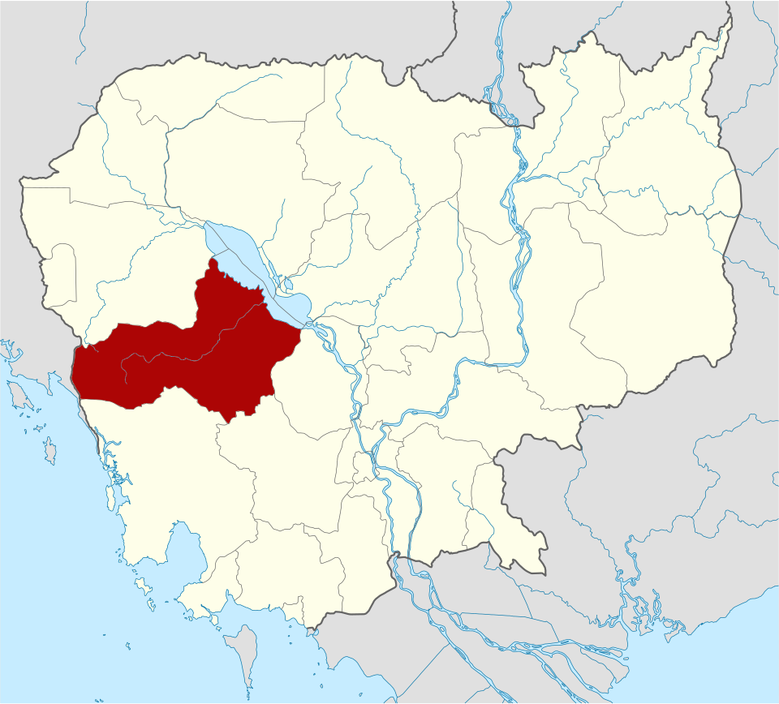
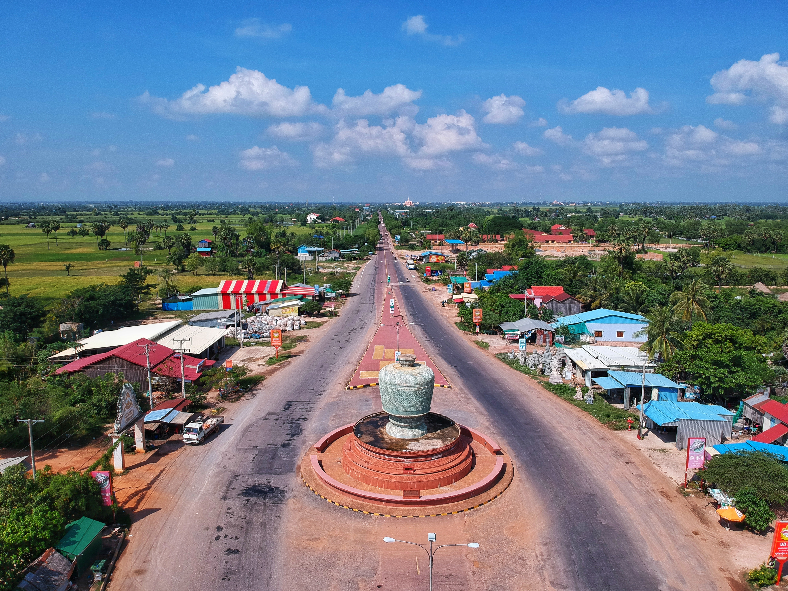
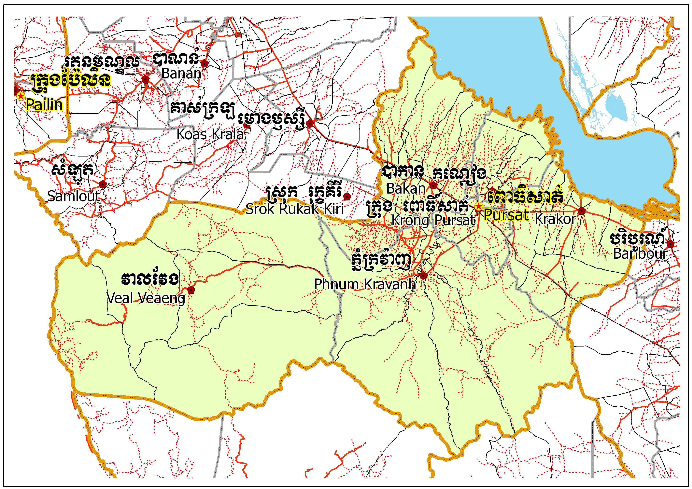
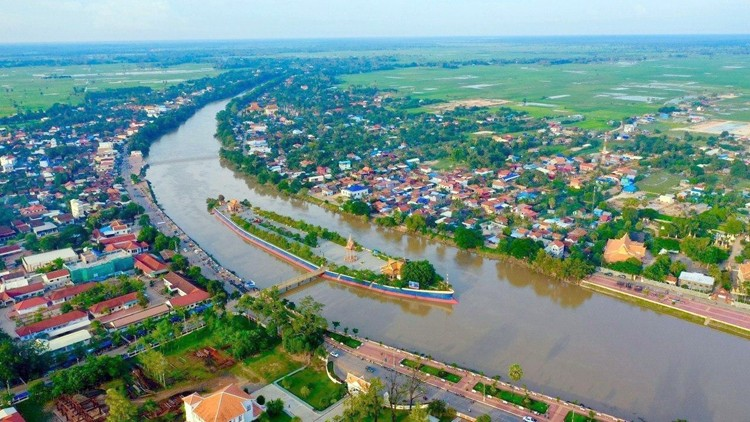

Pursat
← ត្រឡប់ទៅផែនទីខេងពោ ធិសាត់ត្តពោធិ៍សាត់ជាខេត្តមួយនៅភាគខាងលិចនៃប្រទេសកម្ពុជា។ ខេត្តពោធិ៍សាត់មានទីរួមខេត្តនៅ ក្រុងពោធិ៍សាត់។ ខេត្តពោធិ៍សាត់គឺជាខេត្តមួយដែលសិ្ថតនៅក្នុងតំបន់បឹងទនេ្លសាប មានទីតាំងនៅទិសបចិ្ចមនៃប្រទេស។ ខេត្តពោធិ៍សាត់មានប្រជារាស្ត្រ ៣៦០ ៤៤៥ នាក់ ក្នុងនោះ ប្រុស ១៧២ ៨៩០ នាក់ ស្រី ១៨៧ ៥៥៥ នាក់ ។ ស្រ្តី ៥២,០ ភាគរយនៃប្រជារាស្ត្រសរុបក្នុងខេត្ត [២]។ ស្ថិតនៅភាគខាងលិចនៃប្រទេស និងមានព្រំប្រទល់ពីខាងជើងជាប់ខេត្តបាត់ដំបង បឹងទន្លេសាប ខាងលិចជាប់ខេត្តកំពង់ឆ្នាំង ខាងត្បូងជាប់នឹងខេត្តកំពង់ស្ពឺ ខេត្តកោះកុង និងខាងលិចជាប់នឹងប្រទេសថៃ។ ហើយក៏ស្ថិតនៅចន្លោះ បឹងទន្លេសាប និងចុងខាងជើងនៃជួរភ្នំក្រវាញ។ ទន្លេពោធិសាត់កាត់ខេត្តនេះហូរពីជួរភ្នំក្រវាញនៅភាគខាងលិចទៅទន្លេសាបខាងកើត។ ខេត្តនេះរួមមាន ៦ស្រុក ៧សង្កាត់ ៤២ឃុំ និង ៤៩៥ភូមិ ។ ប្រជារា្រស្តនៅក្នុងខេត្តនេះមាន ៣,២ភាគរយនៃប្រជារា្រស្តទូទាំងប្រទេសកម្ពុជា។ ដង់ស៊ីតេប្រជារា្រស្តរបស់ខេត្ត គឺ២៨ នាក់ ក្នុងមួយគីឡូម៉ែត្រការ៉េទាបជាង ដង់ស៊ីតេថ្នាក់ជាតិដែលមានតែ ៦៤នាក់ ក្នុងមួយគីឡូម៉ែត្រការ៉េ ។

ខេត្តព្រៃវែង ជាខេត្តដែលមានទីតាំងស្ថិតនៅភាគខាងកើតរាជធានីភ្នំពេញ មានព្រំប្រទល់ខាងកើតជាប់ខេត្តស្វាយរៀង និងវៀតណាម ខាងជើងជាប់ខេត្តកំពង់ចាម និងខេត្តត្បូងឃ្មុំ ខាងលិចជាប់ខេត្តកណ្តាល និងខាងត្បូងជាប់វៀតណាម។ ខេត្តព្រៃវែង មានច្រកអន្តរជាតិចំនួន ៣ កន្លែងគឺ ទី១ ច្រកអន្តរជាតិម៉ឺនជ័យ (ស្រុកកំចាយមារ) ទី២ ច្រកអន្តរជាតិបន្ទាយចក្រី (ស្រុកព្រះស្តេច) ទី៣ ច្រកអន្តរជាតិកោះរការ (ស្រុកពាមជរ) នឹងមានផ្ទៃដីសរុបគឺ ប្រហែល ៤៨៨៣ គម² ដែលស្មើទៅនិង ២,៧០% នៃផ្ទៃដីសរុបនៃប្រទេសកម្ពុជា (១៨១ ០៣៥ គម²), ដែលក្នុងនោះ ៤៤៥,១៨ គម² ឬ ៩,១២% ជាផ្ទៃដី ដែលប្រជាជន បានតាំងទីលំនៅ, ៣១០០ គម² ឬ ៦៣,៤៩% ជាដី សំរាប់កសិកម្ម, ១៩៤,៦១ គម² ឬ ៣,៩៩% ជាផ្ទៃនៃតំបន់ ព្រៃឈើ, ១០៨២,៨៦ គម² ឬ ២២,១៨% ជាដី សាធារណៈ, ហេដ្ឋារចនាសម្ព័ន្ធ និង ធារាសាស្រ្ត, និង នៅសល់ ៦០,៣៥ គម² ឬ១,២៤% ជា ដី មិនត្រូវបានប្រើប្រាស់ ។


ខេត្តពោធិ៍សាត់ ជាដែនរដ្ឋបាលស្ថិតនៅ ប្រទេសកម្ពុជា មាន ៥ស្រុក ១ក្រុង ៤០ឃុំ ១០សង្កាត់ និង ភូមិ÷
បូជនីយដ្ឋានប្រវត្តិសាស្ត្រលោក ឧកញ៉ា ឃ្លាំង មឿង នេះបានកត់ត្រាទុកប្រវត្តិដ៏អស្ចារ្យ និងអច្ឆរិយរបស់លោកតាឃ្លាំងមឿង ដែលជាវីរៈជនក្លាហានក្នុងប្រវត្តិសាស្ត្រខ្មែរ។ ក្រៅពីជាទីតាំងប្រវត្តិសាស្ត្រ ទីតាំងនេះ ក៏តែងមានភ្ញៀវទេសចរទៅអង្គុយ សម្រាកលេង ព្រោះមានទីធ្លាធំទូលាយ មានរូបចម្លាក់បែបសាសនា និងប្រវត្តិសាស្ត្រជាច្រើន។ ដើមឈើធំៗ ក៏បានផ្ដល់ម្លប់យ៉ាងត្រឈឹងត្រឈៃ ដល់ភ្ញៀវទេសចរផងដែរ។ ភ្ញៀវទេសចរ ក៏អាចទៅបូជនីយដ្ឋានមួយនេះ បោះចំណីឲ្យសត្វព្រាប និងឲ្យចំណីត្រីផងដែរ។

កោះសំពៅមាស គឺជាសួនឧទ្យានធម្មជាតិ និងជារមណីយដ្ឋានដ៏ទាក់ទាញមួយ ស្ថិតនៅចំកណ្តាលស្ទឹងពោធិ៍សាត់ ក្នុងក្រុងពោធិ៍សាត់ ខេត្តពោធិ៍សាត់។ កោះតូចច្រឡឹងនេះ មានរាងដូចជាសំពៅ ដោយលាតសន្ធឹងនៅចន្លោះមុខសាលាខេត្ត និងមន្ទីរពេទ្យបង្អែកសំពៅមាស។កន្លែងកម្សាន្តដ៏ពេញនិយមនេះ មានចម្ងាយប្រមាណ ១ ០០០ម៉ែត្រពីគល់ស្ពានថ្ម តាមបណ្តោយផ្លូវលេខ១០១។ ទីនេះជាទីតាំងដ៏ស្រស់បំព្រង ហ៊ុំព័ទ្ធដោយដើមឈើធំៗ និងជាកន្លែងដែលប្រជាជនក្នុងស្រុក ក៏ដូចជាភ្ញៀវទេសចរនិយមទៅលំហែកាយ ស្រូបយកខ្យល់អាកាសបរិសុទ្ធ និងថតរូបអនុស្សាវរីយ៍